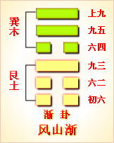
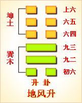
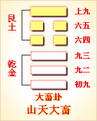

高岛易断 - 53风山渐
高岛易断 53 风山渐
《序卦传》曰："艮者，止也。物不可以终止，故受之以渐。渐者，进也。"为卦《艮》下《巽》上，《巽》为风，为木，《艮》为山，风善入，木易长，有进之象；山则止而不动，欲进而为山所止，是以其进不速也。《正义》曰，"凡物有变移，徐而不速谓之渐"，此卦之所以名《渐》也。
渐
［62］
：女归吉，利贞。
《渐》反为《归妹》，其象同取于女，《归妹》之少女，以悦而归，不如《渐》之长女，以顺而归也。以顺而归，则媒妁言之，父母命之，及长而字，则渐而来，得其正也，故曰"女归吉"。《艮》男《兑》女，其卦曰《咸》，以男娶女也，故先戒以"利贞"，而后曰"娶女吉"；《渐》以《艮》男《巽》女，以女归男也，故先曰"女归吉"，而后告以"利贞"。
《彖传》曰：渐之进也，女归吉也。进得位，往有功也。进以正，可以正邦也。其位，刚得中也。止而巽，动不穷也。
渐者，循序而进，以渐进也。卦体三阴三阳，皆从《乾》《坤》来。《乾》父《坤》母，《乾》三索成《艮》，为少男，《坤》一索成《巽》，为长女，故象取"女归"。女嫁曰归。女子之嫁也，及时而字，纳礼而往，《渐》之义也。盖女归之吉，谓得其渐之进也；女正位乎内，男正位乎外，女进而得位，必得其正矣。女以夫为家，故谓之归，母之嫁女，则谓之往。"进得位"，故"往有功也"。《渐》与《蛊》上下易体，《蛊》之九二，进而为《渐》之九五，是为"得位"；九居五，位爻皆正，是为"进以正"。夫妇为王化之原，正家正国，皆基于此，故极其功效，"可以正邦也"。"刚得中"，谓九五也。"止而巽，动不穷"，此合二体而言，以止为体，以顺为用，本《艮》之笃实，动而为《巽》之利市，故曰"动不穷也"。
以此卦拟人事，卦名曰《渐》，卦义在进。天下事无不贵进，而进要不贵迅速，而贵舒缓，舒缓之谓渐也。自世好急功，而《渐》之道失矣，惟于"女归"，则犹存其《渐》之旨焉，故爻象独取"女归"。男女为人伦之始，是人事之至要也。按《屯》二曰"女子贞不字，十年乃字"；《归妹》四曰"归有时"，五曰"位在中"；《家人》《彖传》曰"正家而天下定"。凡《易》之言婚嫁，多以得时为正，得位为中，由兹而往，足以成内助之功，即足开治国之基。诸卦分言之，而独以渐则合言之，以《渐》九五之吉，为刚而得中也。为卦《艮》以止，《巽》以动，知止而进，其进有序，其用不穷，所谓正一身以正朝廷，正朝廷以正百官，正百官以正天下，道不外是焉。是皆有渐进而渐广之用也。
以此卦拟国家，卦象专取"女归"，六爻亦皆言男女配合之礼，殊于国家无关，而《彖传》则曰"进以正，可以正邦也"，则知正国之道，基于正家矣。《诗》云"刑于寡妻，以御于家邦"，此之谓也。渐者，为言徐而不速，为政而曰勿欲速，亦取夫《渐》之义也。国家之事，循序而进，教化之行，日进有功。圣天子正位凝命，刚而得中，内而宫闱，外而邦国，罔不本身出治。诗《樛木》、《芣莒》之篇，知王化之行，皆本诸后妃贞静之德，由近及远，渐推渐广，汝濆江汉之间，无不风行俗美，盖其渐积而来者，有由矣。虽《彖》辞首言"女归"，而由齐家以及治国，道本无二致也。"止而巽，动不穷"者，就《艮》《巽》而括言之，则《艮》为社稷，《巽》为诰命，皆可见其动之不穷也，夫岂第为女子于归言哉！惟在读《易》者玩索而得之。
通观此卦，卦本《乾》《坤》三四往来，阴进而止乎四，九居五而得中，上六以阴居阴，各得其所。爻与《家人》同，而其所异者，初爻九六之别耳，故渐在家则内外顺，在国则上下安。《彖》《象》取"女"，爻象取"鸿"，其卦为《艮》男《巽》女，迨吉于归。《诗》云"弋凫与雁"，是婚礼用雁之证也。雁之飞识时，女之归待聘，《渐》之义也。然鸿飞有序，知长幼之礼，其群有偶，厚夫妇之别，其来有候，适寒暑之期，是物之进而能渐者，莫如鸿焉，是以六爻之象，其始栖息甚近，其终飞翔甚远。初言"干"，象其进之始；二言"磐"，象其进之安；三言"陆"，则非所安；四言"木"，则始危而终安；五言"陵"，则升天位之高；上言"陆"，则出于人位之外。而初之不得所安，无应而不能进也；三之不得所安，无德而不能进也；四乘刚有德，可安也；上九过高，其德犹可则也；二五以中正相应，是以独得其吉也。卦画皆以奇先偶，象鸿飞有序；下卦以一奇率二偶，上卦以一偶随二奇，象鸿飞大者先小者随。阳大阴小，长幼之节，倡随之礼，夫妇之道也。六爻皆言渐，自初至上各有次序，实与《彖》辞渐进之义，足以相发明矣。
《大彖》曰；山上有木，渐。君子以居贤德善俗。
山上有木，以木在山，为得其所，犹女子以归为得所。君子法此象，观木之由渐而长，非一时所可成，即知俗之由渐而善，非一旦所能化。要必先居德以为表率，使之渐仁摩义，而风俗自善。古称缺妻之贤，孟光之德，足以化俗，况士君子之躬居贤德者乎？其化民成俗，固有日进而日善者也。全卦皆取《巽》女，而《象》独称"君子"，盖《艮》为贤人，故曰"君子居贤德"。要知君子与淑女，足为配偶，其德同，其化亦同也。"善俗"，王肃本作风俗，"居贤德"，《本义》云"贤字衍"。
【占】 问时运：如木在高山，得逢春生发之象。
○ 问营商：山藏货财，木能生发，且《巽》为商，利市三倍，得此卦象，自必能逐渐得利也。
○ 问功名：足膺贤才之选。
○ 问战征：防三军前进，在深山茂林之处，有敌兵埋伏。
○ 问婚姻：必是贤德淑女，是以"君子好逑"。
○ 问家宅：必是德门仁里，君子居之。
○ 问疾病：是木克土之症，宜安居调养。
○ 问六甲：望前生者男，望后生者女。
高岛易断 初六：鸿渐于干，小子厉，有言，无咎。
《彖传》曰：小子之厉，义无咎也。
鸿，水禽，来往有时，群飞有序。相传汉土婚礼用雁，取其飞行不乱，失偶不再，有女贞之象。大曰鸿，小曰雁，鸿与雁一也。《彖》曰"女归"，故六爻皆取喻于鸿。"干"，水湄，鸿渐干而得所栖，犹女适人而得所托。但《艮》为少男，故称"小子"，《巽》为长女，一长一少，年齿相悬，未免于归愆期，或有不测之变，是为"小于厉"也。《说卦》"成言乎艮"，有言，为有成言也。女子许嫁，惟凭媒妁之言，既有其言，不得以有变而渝，故曰"有言无咎"。初应在上，初与上爻，高下悬殊，即可见夫妇年齿，长幼亦悬殊。女能待年不乱，守礼无失，无所为厉，复有何咎？《彖传》以"义无咎"释之，盖谓义在则然，咎自无焉。
【占】 问时运：人微年少，运途初行，虽危无咎。
○ 问战征：屯军江干，防有危厉，幸有谍言来告，得以免咎。
○ 问营商：货物交易，防有小人从中作难，因约言早成，得以无害。
○ 问功名：鸿运亨通，初虽在下，自有渐进之象。
○ 问婚姻：女长男少，妁言既定，当以待年而嫁，无咎也。
○ 问家宅：此宅临水，防小人有疾厄，然无大咎。
○ 问疾病：不利小人，大人无咎。
○ 问六甲：生女。
【例】 友人某来请占事业成否，筮得《渐》之《家人》。
断曰：《渐》者，渐而进也，《渐》在初爻，为进步之初基也。"干"，水涯，亦低下之处。君占事业，得《渐》初爻，知君此业，必是初次开办，如秋雁初来，尚在江干飞集，未得远翔。凡事业初创，未免有小人出而阻扰，务要把定初志，不改成言，是得无咎。然在初爻，其进犹微，必得四年后，行到上爻，则得其应援，必可大获利益也。
高岛易断 六二：鸿渐于磐，饮食衎衎，吉。
［63］
《彖传》曰：饮食衎衎，不素饱也。
磐者，水中平石，"衎衎"，和乐之貌。"鸿渐于磐"，有水可饮，有蒲鱼稻梁可食，为足乐也，犹女子嫁得其夫，合卺而饮，共牢而食，自见"宜室宜家，和乐且耽"。二与五相应，即为配偶，妇人贤德，足以内助，固非虚食夫家之食者也。《彖传》以"不素饱"释之，即此意也。
【占】 问时运：既得安乐，又得醉饱无忧，吉。
○ 问战征：兵食充足，军心欢悦，自有安似磐石之象。
○ 问营商：二爻居《巽》之中，《巽》为商，为利。就爻辞言"干"进"磐"，有渐进渐高之势，吉。
○ 问功名：有嘉宾宴乐之象，成名必矣，吉。
○ 问婚姻：二与五相应，即以二五为婚；二五皆吉，可咏百年偕老矣。
○ 问家宅：此宅地基巩固，一门和乐，吉。
○ 问疾病：饮食过度所致，宜消食安胃，病即日可愈。
○ 问六甲：生女。
【例】 明治二十三年，占某贵显气运，筮得《渐》之《巽》。
断曰：二爻居《巽》之中，《巽》，顺也。爻辞曰"鸿渐于磐"，鸿，大雁也，磐，山石之安者。贵下占气运得此爻，知贵下鸿运通顺，持躬涉世，皆得安如磐石，无人得而动摇。由"干"进"磐"，见鸿飞踪迹，逐步增高，喻贵下卒业东北学校，继复游学欧美各邦，学识亦渐步长进。且二爻与五相应，爻以夫妇和谐，即可见君巨之喜乐，至美衣饱食，和乐衎衎，本贵下所素有也，吉何如也！
【例】 明治三十二年，占北海道厅气运，筮得《渐》之《巽》。
断曰：《渐》者渐进也，由乱而进于治，由衰而进于盛，皆有渐进之象焉。今占北海道厅气运，而得《渐》之二爻，爻辞曰"鸿渐于磐"，由"干"而进于"磐"，是亦渐进而渐高也，知北海道厅治象，当必日进日盛。爻又曰"饮食衎衎"，在北海一带，为鱼临蜃蛤之乡，其足供饮食者，出产饶富，民居斯土，获斯利，家室丰盈，雍雍和乐，自得"饮食衎衎"之喜。爻辞曰"吉"，信可知也。
高岛易断 九三：鸿渐于陆。夫征不复，妇孕不育，凶。利御寇。
《彖传》曰：夫征不复，离群丑也。妇孕不育，失其道也。利御寇，顺相保也。
"陆"，高平之地，鸿所集也。九三阳刚为夫，六四阴柔为妇，三又与六正应，六亦曰"陆"。自内往外为征，三往就外之陆，而遂弃内之陆，故"不复"。上互《离》，《离》为大腹，孕之象；下互《坎》，《坎》为灾，为鬼，不育之象。三与四以比邻私通，坏彝伦之大纲，背渐进之大义，安能得室家和睦，夫妇偕老，生育以延嗣续之庥乎？故曰"夫征不复，妇孕不育，凶"。且雁呼芦避缴，巡呼警夜，飞则相随，止则相保，亦有御寇之象，故曰"利御寇"。夫鸿之有雌雄，犹人之有夫妇也，雄飞不返，是离其群矣；胎孕之道，期其长育，孕而不育，是失其道矣。雌雄相守，是所以"御寇"，是"顺相保"也。《彖传》逐句释之，有以夫！
【占】 问时运：运途不正，防有外祸。
○ 问战征：利于守御，不利往征。
○ 问营商：难望获利，防有盗劫之虞。
○ 问功名：惟从事军政，可以得名。
○ 问婚姻：防有始乱终离之憾。
○ 问家宅：此宅于生产不利。
○ 问疾病：妇人生产，恐母子不能两全。
○ 问六甲：生女。
【例】 昔余在囚之日，有狱吏和田某者，突然谓余曰：今兹罪案，曷不卜之？先是余自占气运，得《艮》之《渐》，断辞详记需三爻；今复一占，筮得《渐》之《观》。
断曰："夫征不复"，谓此案已往，不复追究矣。"妇孕"者，谓祸胎也，"不育"者，谓此案不致再生枝节矣。"御寇"者，谓审狱之官也；"顺相保"者，谓必能保护我身也。然所谓相保者，当必在和田氏矣。
后一二旬，前奉行退职，清水某袭其后，和田氏为奉行次席，于是二氏相谋，以五十月徒期，减为二十月，余乃得以出罪。
高岛易断 六四：鸿渐于木，或得其桷，无咎。
［64］
《彖传》曰：或得其桷，顺以巽也。
四居《巽》之始，《巽》为木。鸿水鸟，本不栖木，"桷"者，枝柯之大而平者也，于木之中，而得方平之桷，则亦可以容足矣。"或"者幸得之辞，此以鸿之失所，喻妇之失所也。四夫在三，三"征不复"，四妇失其所矣，或得其桷而集之，亦无咎焉。巽顺自守，不失妇道之正，虽无夫可也。
【占】 问时运：运失其正，但以顺自处，随遇得安，亦可无咎。
○ 问营商：聊有所得，差足免咎。
○ 问战征：得其倚角，敌势已衰。
○ 问功名：从事角逐，所得亦微。
○ 问疾病：病在肝木太盛，宜顺气调养。
○ 问家宅：此宅多寡居之妇，有遇人不淑之感。
○ 问行人：在外失年，聊以将顺容身，一时不归。
○ 问六甲：生男。
【例】 旧大垣藩主华族户田氏，奉侍萱堂，借余神奈川别墅，闲居养病者数月，医士户冢文海氏间日自东京来诊。一日户冢氏谓余曰：诊视户田太君之疾，四五日前，颇为可虑，近少轻快，惟老衰难期速效。余曰：顷日代为问卜筮得《渐》之《遁》，今玩爻辞，知太君近病无妨，恐明后年命限有阻。
户冢氏俯首不语。有松野家老出而问曰：我太君之命，其终于明后年乎？余曰：请勿与外人道也！后三年，太君果仙逝，会葬之日，户冢氏追述前言，感叹《易》理之前知。盖《渐》为长女，卦为归魂，自四至上，三爻为三年，由是推之，死期可预决也。
高岛易断 九五：鸿渐于陵。妇三岁不孕，终莫之胜，吉。
《彖传》曰：终莫之胜，吉，得所愿也。
《尔雅》，"大阜曰陵"。又八陵，北陵、西俞、雁门是也。此陵当是北陵，雁之家也。《月令》，"季秋鸿雁来宾"，鸿之南来为宾，北陵则为家，孕育则在家也。五与二正应，为夫妇，故以"鸿渐于陵"，喻夫妇之居家也。三至五互《离》，《离》为大腹，三动则《离》坏，故"不孕"；自二至五历三爻，象"三岁"。《艮》少男，《巽》长女，女及笄，而男犹未冠，是以不能生育，迨及时而阴阳和合，自然得孕矣。男少女长，似女偏胜，然二五正应，内外得当，夫倡妇随，故曰"终莫之胜"。时至而孕，各得所愿，吉可知也。又云：此卦三五皆言妇，九五以二为妇，正也，九三以四为妇，非正也。故三四相比为夫妇，虽孕而不敢育。女之归不以渐也，故凶；二五以相应为夫妇，不孕而得所愿，女之归以渐也，故吉。
【占】 问时运：运途中正，三年后，无往不利，吉。
○ 问战征：屯军大阜，三年后，所向无敌，吉。
○ 问功名：三年后必成。
○ 问营商：目下难望获利，至上爻自可独占厚利，盖在三岁后也。
○ 问婚姻：得子稍迟，吉。
○ 问家宅：宅在大阜之间，吉。
○ 问六甲：生男。
【例】 某商人来请占气运，筮得《渐》之《艮》。
断曰：五居外卦之中，进步已高，得渐于大阜之上，无可再进也。足下占气运而得此爻，知足下营商多载，虽事业渐进渐高，而不得一时获利，如鸿鸟雌雄相随，而一大一小，未能即时生育也。鸿待三年后可孕，知商业亦必待三年后，可获大利也。"终莫之胜"者，谓非他人所能及也。爻辞曰"吉"，吉可知也。《象》曰"得所愿"，知足下平生之志愿，可遂矣。
高岛易断 上九：鸿渐于陆，其羽可用为仪，吉。
《象传》曰：其羽可用为仪，吉，不可乱也。
上与三皆处卦极，故并称"陆"。《渐》卦六爻，皆取象于鸿，以喻夫妇，即本《彖》辞"女归"之旨。三之《渐》"陆"，夫道不正，致妇失所，不如鸿之雌雄相守；上则犹是陆也，犹是渐也，而以礼相接，人咸称美，不特表闺阃之令范，且足树邦国之合仪矣。一羽本轻，而先王制礼，纳采问名，皆取以为用，非以其有偶而不乱乎？夫妇之道，亦如是焉，故曰"其羽可用为仪"。"女归"之"吉"，其以此乎？
【占】 问时运：气运正盛，可出而用也，吉。
○ 问战征：从平陆进军，威仪显赫，攻无不克
○ 问营商：货美价高，定可获利。
○ 问功名：出而用世，可以仪表天下。
○ 问婚姻：吉。
○ 问家宅：此宅地位崇高，瞻观有耀，吉。
○ 问六甲：生男。
【例】 明治十九年，虎列喇病流行于横滨，凡横滨店中，家族皆避疫于神奈川别庄，东京之友，皆归东京，余携远来学者八人，赴箱根木贺。一日有东京门人，判事尾藤某来状，其旨曰：今度拜命，赴越后高田裁判所长，临发自筮，爻象不吉，请为再占气运如何？筮得《渐》之《蹇》。
断曰：全卦以渐进为义，爻至上六，渐进之义已终，进无可进，是暖回冰解，鸿鸟北还之时。今占尾藤氏气运，得此上爻，知为新授北国高田判事之任。爻辞所云"鸿渐于陆"，辞意适合，本是吉象，但此爻《易》三百八十四爻中，为归魂八爻之一，占者当此，生命有阻。因叹曰：氏为余门人中之翘楚，他日继余《易》学者，在此人也，大为可惜！
一时从者闻此断词，皆谓共在一堂，何得以一筮之下，遽断必死？后尾藤赴任高田，未几果殁。
周易 - 53风山渐
周易第53卦_渐卦(风山渐)_巽上艮下

|
 |  |  |
| 本卦 | 互卦 | 错卦 | 综卦 |
周易第五十三卦详解
渐卦原文
渐。女归吉，利贞。
象曰：山上有木，渐。君子以居贤德善俗。
白话文解释
渐卦：女大当嫁，这是好事。这是吉利的贞卜。
《象辞》说：本卦下卦为艮，艮为山；上卦为巽，巽为木，木植山上，不断生长，是渐卦的卦象。君子观此卦象，取法于山之育林，从而以贤德自居，担负起改善风俗的社会责任。
《断易天机》解
渐卦巽上艮下，为艮宫归魂卦。渐为渐进，筮遇此卦，女嫁则吉，举事有利。
北宋易学家邵雍解
循序渐进，积少成多；渐进即利，性急即败。
得此卦者，逐步开运，凡事宜循序渐进，则谋事可成，不宜急进，性急则败。
台湾国学大儒傅佩荣解
时运：时来运转，可以得意。
财运：逐渐得利，多行善事。
家宅：君子居之；贤女可妻。
身体：安居调养。
传统解卦
这个卦是异卦（下艮上巽）相叠。艮为山，巽为木。山上有木，逐渐成长，山也随着增高。这是逐渐进步的过程，所以称渐，渐即进，渐渐前进而不急速。
大象：山上种有树木，逐渐生长，比喻循序渐进。
运势：逐渐走向光明前途，凡事宜打根基，可得吉庆，但须防色情之难及文书错失。
事业：在经过一个相对静止的时期后，重新开始了事业的新阶段。这时最怕的是急躁冒进，务必循序上进，脚踏实地。同时注意品德修养，以沉着、谦逊的态度对待事业，可无往而不利。
经商：正处在稳步向前发展的阶段，要把握时机，既不可盲目乐观，也不要停步不前，而应采取逐步前进的策略，量力而行。遵守商业道德，以良好的服务，开拓市场。
求名：效法树木植根山上，逐渐生长的精神。在品德和学业两个方面，扎扎实实地提高自己。同时，肩负起改善社会风俗的责任。求名应以渐进为宜，切不可急进。
婚恋：不可操之过急。幸福、美满，夫妻白头和谐。
决策：时来运转的时刻已经到来，切莫错过良机。务必小心谨慎，渐进有益有利。以谦和的态度处世，可以得到强有力的支持，会获得重大成功。
第五十三卦的哲学含义
渐卦卦象，木山渐卦的象征意义
渐卦，这个卦是异卦相叠，下卦为艮，上卦为巽。艮为山，巽为木。山上有木，逐渐成长，山也随着增高。这是逐渐进步的过程，所以称渐。"渐"即"进"，渐渐前进而不急速。
渐卦位于艮卦之后，《序卦》中这样解释道："物不可以终止，故受之渐。渐者，进也。"艮卦谈止，止到尽头又须开始活动，这时出现的是渐卦。渐为进，并且是有秩序地渐进。《杂卦》中这样说道："渐，女归待男行也。"古代女子若要出嫁，必须要等待男方行聘，以便依序进展，这也体现了渐的特点。
《象》中这样解释渐卦：山上有木，渐；君子以居贤德善俗。这里指出：渐卦的卦象是艮（山）下巽（风）上，表明高山上的树木逐渐成长，象征循序渐进；君子观看高山上的树木逐渐成长，于是修养德性，改善社会的风尚、礼节和习惯。
渐卦象征着循序渐进，告诉人们渐进蓄德的道理，属于上上卦。《象》中这样来断此卦：俊鸟幸得出笼中，脱离灾难显威风，一朝得意福力至，东西南北任意行。
周易第五十三卦初九爻详解
初六爻辞
初六。鸿渐于干，小子厉。有言，无咎。
象曰：小子之厉，义无咎也。
白话文解释
初六：鸿雁走进了山涧。筮遇此爻，警惕小孩顽皮，遭遇危险，应该加以谴责，则没有灾难。
《象辞》说：小孩顽皮遭遇危险，因为有家长呵责制止，理应不会出事故。
北宋易学家邵雍解
凶：得此爻者，运气不佳，谋为不利。
台湾国学大儒傅佩荣解
时运：初行好运，要有耐心。
财运：有约在先，宜防小人。
家宅：尚无大碍；女长男少。
身体：大人没事，小孩就医。
初六变卦
初六爻动变得周易第37卦：风火家人。这个卦是异卦（下离上巽）相叠。离为火；巽为风。火使热气上升，成为风。一切事物皆应以内在为本，然后伸延到外。发生于内，形成于外。喻先治家而后治天下，家道正，天下安乐。
初九爻的哲学含义
渐卦第一爻，爻辞：初六：鸿渐于干；小子厉，有言，无咎。爻辞释义
干：通"岸"。有言：是指有怨言，被人议论。
本爻辞的意思是：鸿雁迁移远行之前，汇聚于河岸，做好结队飞行的准备。小雁不知道旅途的艰险，不能耐心等待，因而受到众人的责备。做事如果能够循序渐进，就不会受害。
从卦象上看，初六属于阴爻居柔位，才质柔弱，像小雁子一样，能力不足。初六位于初始之位，没有居中，意味着其做事不能持中，有冒进之嫌，像小雁子急于迁移，不能耐心等待，但是自身能力又不足，所以会被人责备，但是别人看其年幼无知，也不会进行刁难，责备之后还会进行帮助。
《象》中这样解释本爻："小子之厉"，义无咎也。这里指出："小雁不知道旅途的艰险，不能耐心等待，因而受到众人的责备"，但不会发生什么危险
占得此爻者，可能是年龄较小，也可能是刚毕业参加工作，还有可能换了工作，来到了一个新的陌生的行业。单位里有一次重要的任务，别人正在精心谋划，你却认为没必要那么做，直接去做就行了，可能领导或老员工会责备你，但是看在你是新来的不太懂的份上，不会过于打击你的。
占得此爻者，一定要意识到自己年幼无知或是经验不足，做事不要冒进，要循序渐进。要养精蓄锐，不要急于发表自己的观点，要看大家怎么做，然后跟着大家去做，这样才能免受责难。
初六：鸿渐于干，小子厉，有言，无咎。
象曰：水子之厉，义无咎也。
经文意思是：大雁渐渐飞到了水边，小雁有危险，被大雁叫住，没有灾难。
象辞意思是：小雁的危险，从道义上讲不应该有突难。
周易第五十三卦九二爻详解
六二爻辞
六二。鸿渐于磐，饮食衎衎，吉。
象曰：饮食衎衎，不素饱也。
白话文解释
六二：鸿雁走上水边高地，饱饮饱食，自得喜乐。筮遇此爻，吉利。
《象辞》说：饱饮饱食，自得喜乐，喻指其人，自食其力，从不白吃白喝。
北宋易学家邵雍解
吉：得此爻者，无往不利，随处皆安。
台湾国学大儒傅佩荣解
时运：嘉宾安乐，名利皆有。
财运：日益增加，稳若磐石。
家宅：和乐相处；百年偕老。
身体：饮食过度之症。
六二变卦

六二爻动变得周易第57卦：巽为风。这个卦是同卦（下巽上巽）相叠，巽为风，两风相重，长风不绝，无孔不入，巽亦为顺、谦逊的态度和行为，可无往不利。
九二爻
的哲学含义
渐卦第二爻，爻辞：六二：鸿渐于磐，饮食桁桁，吉。爻辞释义
磐：指磐石。桁桁：形容和谐欢快的气氛。
本爻辞的意思是：鸿雁已经从河岸渐渐地升进聚集到磐石上，作起程前最后的准备。一起安享饮食，吉祥。
从卦象上看，六二以阴爻居柔位，而且上应九五之君。六二能持中守正，不会冒进，按着规矩来循序渐进地行进。"饮食"是准备吃饱了大干一场。
《象》中这样解释道："饮食桁桁"，不素饱也。这里指出："饮食和乐"，说明绝不是素餐不干事情的。
占得此爻者，你还没有到展翅高飞的时候，要一步一步地做准备，等待时机一到，就能大展身手了。任何事情都有自己的步骤，不能一蹴而就，你应该意识到这个过程，不要急于冒进。
六二：鸿渐于磐，饮食衎衎，吉。
象曰：饮食衎衎，不素饱也。
经文意思是：大雁渐渐飞到磐石上，饮食和乐，吉祥。
周易第五十三卦九三爻详解详解
九三爻辞
九三。鸿渐于陆，夫征不复，妇孕不育，凶。利御寇。
象曰：夫征不复，离群丑也。妇孕不育，失其道也。利用御寇，顺相保也。
白话文解释
九三：鸿雁走到旱地上。筮遇此爻，丈夫出征可能不再回返，妇女怀孕可能流产，这是凶险之兆。但有利于抵御敌寇。
《象辞》说：丈夫出征不再回返，说明其人掉队遇险。妇女怀孕而流产，说明其人失其保胎之道。利于抵御敌寇，说明国人能够同心同德，保家卫国。
北宋易学家邵雍解
凶：得此爻者，多惊扰，人情不睦，盗贼侵害。做官的上进有阻力，有被贬之忧。
台湾国学大儒傅佩荣解
时运：运势不正，须防有祸。
财运：不易得利，防有盗贼。
家宅：不利生产，须防离散。
身体：生产时恐难两全。
九三变卦

九三爻动变得周易第20卦：风地观。这个卦是异卦（下坤上巽）相叠，风行地上，喻德教遍施。观卦与临卦互为综卦，交相使用。在上者以道义观天下；在下者以敬仰瞻上，人心顺服归从。
九三爻
的哲学含义
渐卦第三爻，爻辞：九三：鸿渐于陆，夫征不复，妇孕不育，凶；利御宼。爻辞释义
陆：指较平的山顶。不复：不回来。
本爻辞的意思是：鸿雁飞起来逐渐前进到较平的山顶上，每一只都要紧跟群体。若是单独行动则难以回来。也不可苟徇私情，随意结合，否则将会虽孕却难以生育，这当然是凶险的事。坚守正道，谨慎防守，可抵御敌人的侵犯。
《象》中这样解释本爻："夫征不复"，离群丑也；"妇孕不育"，失其道也；"利用御宼"，顺相保也。这里指出："若是单独行动则难以回来"，离开自己的同类是值得忧虑的；"虽孕却难以生育"，因为违反了妇道；"坚守正道，谨慎防守，可抵御敌人的侵犯"，说明守正能够和顺相保。
占得此爻者，如果你想成事业，必须依附于一个团队，凭自己的单打独斗，难以有所成就。在一个团队之中，要就遵守团队的纪律，不要乱来。大家团结在一起，更有利于抵御困难。
占得此爻者，如果不顾劝阻离乡背井去从事冒险的事业，想办的事办不成，帮助你的人会因此受累，你会长期流落在外而难以归家。
九三：鸿渐于陆，夫征不复，妇孕不育，凶；利御寇。
象曰：夫征不复，离群
周易第五十三卦九四爻详解详解
六四爻辞
六四。鸿渐于木，或得其桷，无咎。
象曰：或得其桷，顺以巽也。
白话文解释
六四：鸿雁飞到树木上，有的停息在河边堆放的桷木上。筮遇此爻，没有灾难。
《象辞》说：有的鸿雁停息在河边堆放的桷木上之所以没有灾难，因为六四阴爻居于九五阳爻之下，像人有驯服而又谦逊之德。
北宋易学家邵雍解
平：得此爻者，利于修造，自给自足。做官的须随遇而安，升迁无定。
台湾国学大儒傅佩荣解
时运：随遇而安，可以免咎。
财运：利润甚微，保本即可。
家宅：可能寡居。
身体：肝火过盛。
六四变卦
六四爻动变得周易第33卦：天山遁。这个卦是异卦（下艮上乾）相叠。乾为天，艮为山。天下有山，山高天退。阴长阳消，小人得势，君子退隐，明哲保身，伺机救天下。
九四爻
的哲学含义
渐卦第四爻，爻辞：六四：鸿渐于木，或得其桷，无咎。爻辞释义
木：指大树。桷：树干主枝的分叉处，常为飞禽做窝栖息之地。
本爻辞的意思是：鸿雁飞起来逐渐前进到一片大树林，或许能找到较平的枝杈得以栖息，不会带来什么灾祸。
从卦象上看，六四以阴爻居于柔位，紧临九五，属于近君大臣。尽管六四的处境不安，因为爻中以鸿雁栖树为例，鸿雁乃水鸟，脚蹼不同于鸟爪，在树上呆不稳，"栖而不安"，要时刻防止跌落，所以树上并不是长久的栖息之地。但是六四能够对九五能言听计从，柔顺以待，所以得其荫护，没有灾祸。
《象》中这样解释本爻："或得其桷"，顺以巽也。这里指出："或许能寻找到较平的枝杈得以栖息"，说明六四柔顺和服从。
占得此爻者，可能找到一个新的岗位，或是被推荐到一个更高的职位，但是真正地做起之后，会发现这里并不安全，自己要非常谨慎，否则可能就会被撤职。这个时候，你要对领导或上级表现出柔和与服从，得到领导的赏识和关照，就不会出什么差错了。
六四：鸿渐于木，或得其祸，无咎。
象曰：或得其桷，顺以巽也。
周易第五十三卦九五爻详解详解
九五爻辞
九五。鸿渐于陵，妇三岁不孕，终莫之胜，吉。
象曰：终莫之胜，吉，得所愿也。
白话文解释
九五：鸿雁走到山陵上。筮遇此爻，妻子多年不能怀孕，但始终不会被人取代，吉利。
《象辞》说：始终没有被人取代，吉利，妻子实现了与其丈夫和谐白头的愿望。
北宋易学家邵雍解
吉：得此爻者，先难后易，做官的多招诽谤，先暗后明。
台湾国学大儒傅佩荣解
时运：运势中正，三年必成。
财运：眼前平平，三年大发。
家宅：可以安居；得子稍迟。
身体：三年可愈。
九五变卦
九五爻动变得周易第52卦：艮为山。这个卦是同卦（下艮上艮）相叠。艮为山，二山相重，喻静止。它和震卦相反。高潮过后，必然出现低潮，进入事物的相对静止阶段。静止如山，宜止则止，宜行则行。行止即动和静，都不可失机，应恰到好处，动静得宜，适可而止。
九五爻
的哲学含义
渐卦第五爻，爻辞：九五：鸿渐于陵，妇三岁不孕；终莫之胜，吉。爻辞释义
本爻辞的意思是：鸿雁飞起来逐渐前进到丘陵上，好比丈夫远出在外，妻子三年没有怀孕；但邪毕竟不能胜正，因此最终得到吉祥。
从卦象上看，九五以阳爻居君位，居中守正。其与六二正应，象征两夫妻，都能居中守正，最后能得到吉祥。
《象》中这样解释本爻："终莫之胜吉"，得所愿也。这里指出："邪终久不能胜正，因此就得到吉祥"，实现了夫妇聚首的愿望。
占得此爻者，在事业上可能遇到了险阻，但是因守持正道，努力克服，现在终于实现了自己的愿望。在婚姻上，可能因为种种阻隔夫妻难以团聚，但是相互之间都彼此忠诚，没有背叛，最终得以团聚。
九五：鸿渐于陵，妇三岁不孕，终莫之胜，吉。
象曰：终莫之胜，吉；得所愿也。
周易第五十三卦上九爻详解详解
上九爻辞
上九。鸿渐于陆，其羽可用为仪，吉。
象曰：其羽可用为仪，吉，不可乱也。
白话文解释
上九：鸿雁走到山头上，它的羽毛可用来编织舞具。这是吉利之兆。
《象辞》说：鸿雁的羽毛可用来编织舞具，这是吉利之兆，编织舞具的羽毛应该纯而不杂，像人心志不乱。
北宋易学家邵雍解
吉：得此爻者，得人荐举，谋望有成，祸患不侵，多福多利。做官的大运来到，会得到重用。读书人会取得好成绩。
台湾国学大儒傅佩荣解
时运：大运来到，谋望有成。
财运：货美价高，自然获利。
家宅：辉煌可观；婚姻吉祥。
身体：健康活泼。
上九变卦

上九爻动变得周易第39卦：水山蹇。这个卦是异卦（下艮上坎）相叠。坎为水，艮为山。山高水深，困难重重，人生险阻，见险而止，明哲保身，可谓智慧。蹇，跋行艰难。
上九爻
的哲学含义
渐卦第六爻，爻辞：上九：鸿渐于陆，其羽可用为仪，吉。爻辞释义
雁群通过循序渐进、有秩序地飞行，终于达到目的地。而婚礼这种仪式，也不可乱，古代婚礼的六个步骤中，第一个为纳采，纳采时用雁，最后一个步骤是亲迎，新郎迎亲时帽子上需插雁翎，这也象征通过循序渐进的步骤，而得以圆满的结合。
《象》中这样解释本爻："其羽可用为仪，吉"，不可乱也。这里指漂亮的羽毛可以作为典礼上的装饰品，吉祥"，说明典礼包括婚礼是不能乱的占得此爻者，经过以前循序渐进的行动，一步一步踏实地工作，终于取得了圆满。
上九：鸿渐于陆，其羽可用为仪，吉。
象曰：其羽可用为仪，吉；不可乱也。